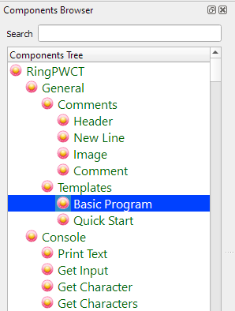
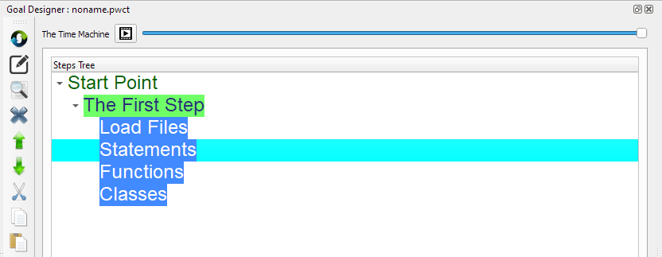

Basic Program component
In this chapter we are going to learn how to use the Basic Program Component
Introduction
Using the Basic Program component we can see big picture behind the structure of our visual source files
In each visual source file, We can Load other files, have statements, functions & classes
Selecting the Component
From the Components Browser select (Basic Program)
Steps Tree
After selecting the (Basic Program) component, The next steps will be generated in the Goal Designer
These steps are like Comments, i.e. using the (Basic Program) component is optional.
In our programs, we must follow this order with respect to the structure of our programs.
We start with loading files, then statements, then functions and finally our classes.